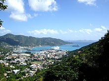

Economy of the British Virgin Islands
|  Road Town, Tortola | |
| Currency | U.S. dollar (USD) |
|---|---|
| 1 Apr - 31 Mar | |
Trade organisations | CARICOM (Associate member) |
| Statistics | |
| GDP | $1.027 billion (2017 est.)[1] |
| GDP rank | 177th (nominal) / 190th (PPP) |
GDP growth | 3.2% (2017 est.)[1] |
GDP per capita | $34,246 (2017 est.)[1] |
GDP by sector | agriculture: 1.8%, industry: 6.2%, services: 92% (2005 est.) |
| 0.85% (2015 est.)[1] | |
Population below poverty line | NA% (2004) |
Labour force | 12,770 (2004) |
Labour force by occupation | agriculture: 0.6%, industry: 40%, services: 59.4% (2005 est.) |
| Unemployment | 8.7% (2010 est.) |
Main industries | tourism, financial services |
| External | |
| Exports | $38.5 million (2011 est.) |
Export goods | rum, fresh fish, fruits, animals; gravel, sand |
Main export partners |
|
| Imports | $275.1 million (2011 est.) |
Import goods | building materials, automobiles, foodstuffs, machinery |
Main import partners |
|
| Public finances | |
| $173.3 million (2017 est.)[1] | |
| Revenues | $310,470,000 (2016 est.)[1] |
| Expenses | $288,640,000 (2016 est.)[1] |
| Economic aid | recipient: $NA (2004) |
All values, unless otherwise stated, are in US dollars. | |
The economy of the British Virgin Islands is one of the most prosperous in the Caribbean. Although tiny in absolute terms, because of the very small population of the British Virgin Islands, in 2010 the Territory had the 19th highest GDP per capita in the world according to the CIA World factbook.[4] In global terms the size of the Territory's GDP measured in terms of purchasing power is ranked as 215th out of a total of 229 countries.[5] The economy of the Territory is based upon the "twin pillars" of financial services, which generates approximately 60% of government revenues,[6] and tourism, which generates nearly all of the rest.
Historically the British Virgin Islands has normally produced a Government budget surplus, but during the financial crisis of 2007–2008 the Territory began to run at a deficit, which continued after the global recession receded. In 2011 the Territory had its largest ever budget deficit, of US$29 million (approximately 2.6% of GDP).[7] By 2012 public debt had quadrupled from pre-crisis levels to approximately US$113 million (approximately 10.3% of GDP).[8] Nearly 84% of that public debt was attributable to a new public hospital built in Road Town between 2003 and 2014.[9] The Economist argued that deteriorating economic conditions in the British Virgin Islands were caused "not [by] sagging revenues but public-sector profligacy".[10] By 2014 public debt had been reduced to US$106 million and the annual deficit reduced to US$25 million (including budgeted capital expenditure).[11]
By 2016, the Government had returned to a primary budget surplus,[12] but public debt had increased to approximately US$141 million[13] and debt service accounted for over US$12 million of the primary surplus. However, because of an ongoing aggressive capital investment programme, and budget overruns on key public projects,[14] the Government ran dangerously low on available cash. Cash in the consolidated fund fell below US$7 million (with average monthly expenditure at nearly US$30 million), and Government accrued over US$13 million in due but unpaid invoices.[15]
Business environment
[edit]In 2015, British Virgin Islands has been assessed as the 34th in terms of global financial centres.[16] This was the highest ranking of any offshore financial centre, and of any Latin American country. The Territory scored strongly in areas such as local taxation, rule of law, regulatory environment and quality of law for human resources. It scored less highly on infrastructure, access to capital and access to labour. The G-20 considers it a tax haven[17] and its banking system is described as 'opaque'.[18]
2017 Government Budget
[edit]The most recent national budget to be delivered was the 2017 budget (the Territory's fiscal year runs from 1 April to 31 March).[1] That budget presented a picture of declining revenues and increasing costs. It was also delivered prior to the devastating effects of Hurricane Irma later in the year, which is likely to have a deleterious effect on the economy and on Government revenues.[19]
The 2017 budget predicted that 2016 final revenue figures of $310,470,000 which was a decrease of 6.2% from the year before. It also predicted recurrent expenditure for 2016 at $288,640,000 which was an increase of 3.6% on the preceding year. That would mean a primary budget surplus of $21,830,000 which would be a decrease of 56.6% from the preceding year.[1]
In addition there was an estimated $21,000,000 of capital expenditure in 2016 (down 38.3% from the previous year), and debt service of $20,200,000 leaving a primary deficit of $19,370,000. In 2017, after accounting for transfers to reserves, there is budgeted to be a structural deficit of $31,674,000. This was to be financed by new borrowing and transfers from the consolidated fund.[1]
The Government's total borrowings were $106.5 million, but the Government has also underwritten significant loans made to the BVI Electricity Corporation and the BVI Ports Authority, meaning that the Government's total loan exposure is $178.3 million.[1]
Much of the Government's increased expenditure arose from staffing costs. Staffing consumes 37.7% of Government expenditure, and increased in 2016 by 10.2% from the year before. The budget calls for it to increase again, but only by 2.6% in 2017.[1]
The bulk of Government revenues (60%) comes from taxes on goods and services. The next largest segment is payroll taxes, which account for a further 16%. Property taxes account for less than 1% of revenue.[1]
Tourism
[edit]In 2015, a total of 922,372 people visited the islands (of whom 529,354 were cruise ship passengers and 393,018 were overnight visitors), mainly from the United States.[1] The bulk of the tourism income in the British Virgin Islands is generated by the yacht chartering industry. The Territory has relatively few large hotels compared to other tourism centres in the Caribbean. The British Virgin Islands also entertain cruise ships, although these generate relatively little revenue. However, cruise ship passengers are an important source of revenue for taxi drivers, who represent a politically important voice in the Territory.
Between 2007 and 2011, tourist visitors to be the British Virgin Islands declined by approximately 12.4%, largely due to the global recession which particularly affected North America, a key source of visitors for the Territory.[7] However, by November 2013 tourist numbers had begun to recover.[20]
According to the World Travel and Tourism Council:[21]
- In 2013, the direct contribution of travel and tourism to the Territory's GDP was US$274 million (accounting for 27.0% of total GDP), and was forecast to rise by 2.8% in 2014, and to rise by 2.7% per annum for the period 2014–2024.
- The total contribution of travel and tourism to GDP was US$780.8 million (76.9% of GDP) in 2013, and is forecast to rise by 3.2% in 2014, and to rise by 2.6% per annum for the period 2014–2024.
- In 2013, travel and tourism directly supported 3,300 jobs in the Territory (33.2% of total employment). This was expected to remain unchanged in 2014 and fall by 0.3% per annum to 3,000 jobs (29.6% of total employment) by 2024.
- The total contribution to employment in 2013 (which includes jobs indirectly supported by the industry), was 90.1% of total employment (8,850 jobs). This was expected to rise by 1.9% in 2014 to 9,050 jobs, but fall by 0.2% per annum to 9,000 jobs in 2024 (80.9% of total).
- Travel and tourism investment in 2013 was US$35.8 million, or 14.8% of total investment. This was expected to rise by 10.1% in 2014, and rise by 2.0% per annum over the next ten years to a total of US$48.2 million in 2024.
However, these statistics include travel as well as tourism, and so non-tourist related travel (i.e. travel relating to domestic consumption and other industries and services) are included and inflate the figures.
Financial services
[edit]In the mid-1980s, the government began offering offshore registration to companies wishing to incorporate in the islands, and incorporation fees now generate an estimated 51.4% of Government revenues. As of 2019, it costs $450 to form a company with fewer than 50,000 shares and another $450 a year to maintain registration.[22]
According to official statistics 447,801 BVI companies were 'active' (i.e. incorporated and not yet struck-off, liquidated or dissolved) as at 30 June 2012.[23] There are no recent official statistics on total numbers of incorporations (including struck, liquidated and dissolved companies) but these are estimated at approximately 950,000. Many of these companies were originally formed under the International Business Companies Act, 1984, but have now been consolidated into the BVI Business Companies Act, 2004.
In 2000, KPMG were commissioned by the British Government to produce a report on the offshore financial industry generally, and the report indicated that nearly 45% of the offshore companies in the world were formed in the British Virgin Islands.[24] The British Virgin Islands is now one of the world's leading offshore financial centres, and boasts one of the highest incomes per capita in the Caribbean.
In addition to basic company incorporations, the British Virgin Islands also forms limited partnerships and trusts (including signature "VISTA" trusts) but these have not proved to be as popular as companies.
On 12 April 2007, the Financial Times reported that the British Virgin Islands was the second largest source of foreign direct investment in the world (behind Hong Kong) with over US$123,000,000,000.[25] Almost all of these sums are directly attributable to investment through the Territory's offshore finance industry.
The British Virgin Islands also promotes a number of regulated financial services products. The most important of these is the formation and regulation of offshore investment funds. The Territory is also the second largest domicile for formation of offshore investment funds (behind the Cayman Islands) with 2,422 licensed open-ended funds as at 30 June 2012[23] (there is no official statistics for closed-ended funds which are not regulated in the British Virgin Islands).
The British Virgin Islands also operates as a domicile for captive insurance services, but a prolonged period of overzealous Government regulation combined with the Government's increasing pressure to hire only locals ("belongers") in the insurance industry decimated the industry. Official reports from the Financial Services Commission reflect as of 30 June 2012 only 161 captives remain registered in the jurisdiction.[23]
History of financial services
[edit]Former president of the BVI's Financial Services Commission, Michael Riegels, recites the anecdote that the offshore finance industry commenced on an unknown date in the 1970s when a lawyer from a firm in New York telephoned him with a proposal to incorporate a company in the British Virgin Islands to take advantage of a double taxation relief treaty with the United States.[26] Within the space of a few years, hundreds of such companies had been incorporated.[27]
This eventually came to the attention of the United States government, who unilaterally revoked the Treaty in 1981.[28]
In 1984, the British Virgin Islands, trying to recapture some of the lost offshore business, enacted a new form of companies legislation, the International Business Companies Act, under which an offshore company which was exempt from local taxes could be formed. The development was only a limited success until 1991, when the United States invaded Panama to oust General Manuel Noriega. At the time Panama was one of the largest providers of offshore financial services in the world, but the business fled subsequent the invasion, and the British Virgin Islands was one of the main beneficiaries.
Agriculture
[edit]Livestock raising is the most important agricultural activity; poor soils limit the islands' ability to meet domestic food requirements. Fewer than 0.6% are estimated to work in agriculture.[29] Despite its tiny economic impact, agriculture has its own dedicated Government minister (unlike financial services).
Dollarisation
[edit]Because of traditionally close links with the U.S. Virgin Islands, the British Virgin Islands has used the US dollar as its currency since 1959.[30]
Footnotes
[edit]- ^ a b c d e f g h i j k l m n "2017 Budget estimates" (PDF). Government of the Virgin Islands. Archived (PDF) from the original on 9 October 2022. Retrieved 22 January 2018.
- ^ "Export Partners of British Virgin Islands". The Observatory of Economic Complexity. Retrieved 8 March 2024.
- ^ "Import Partners of British Virgin Islands". The Observatory of Economic Complexity. Retrieved 8 March 2024.
- ^ CIA - The World Factbook - Virgin Islands
- ^ "CIA Factbook - GDP by country". Archived from the original on 3 January 2014. Retrieved 3 January 2014.
- ^ "New Company Incorporations Down But Premier Remains Optimistic". 14 March 2010. Archived from the original on 3 January 2014. Retrieved 15 March 2010.
- ^ a b "2013 Budget Address" (PDF). BVI Government. Archived from the original (PDF) on 25 December 2014. Retrieved 13 November 2014.
- ^ "National debt grows by $73M over last decade; public sector too big – Financial Secretary". BVI News. 24 January 2013. Archived from the original on 7 April 2013.
- ^ "New hospital responsible for nearly 84% of national debt". Caribbean Medical News. 26 April 2013. Archived from the original on 13 November 2014. Retrieved 13 November 2014.
- ^ "Treasure islands in trouble". The Economist. 25 May 2013.
- ^ "2014 Budget Estimates" (PDF). Government of the Virgin Islands. Archived from the original (PDF) on 29 November 2014. Retrieved 21 November 2014.
- ^ "Update: Gov't Presents Whopping $330M Budget; Largest in History". BVI Platinum. 8 February 2016. Archived from the original on 10 February 2016. Retrieved 9 February 2016.
- ^ "Some Will Have You Believe We Have No Money - Premier Smith". BVI Platinum. 9 February 2016. Archived from the original on 10 February 2016. Retrieved 9 February 2016.
- ^ "Pier Project Balloons To $82.9M". BVI Platinum. 25 January 2016. Archived from the original on 6 October 2016. Retrieved 9 February 2016.
- ^ "National debt is $141M, unpaid invoices $13M". BVI News. 5 January 2016. Archived from the original on 6 February 2016. Retrieved 9 February 2016.
- ^ "The Global Financial Centres Index" (PDF). Qatar Financial Centre. 31 March 2015. Archived from the original (PDF) on 14 April 2015. Retrieved 9 April 2015.
- ^ Fox, Ben (9 May 2009). "Islands resent crackdown of the tax havens by G-20". Associated Press. Archived from the original on 15 May 2009. Retrieved 2 April 2016.
- ^ McKenzie, Nick; Baker, Richard (18 November 2013). "Leighton Holdings linked to 'corrupt' fees for Iraq pipeline contracts". The Australian. Retrieved 2 April 2016.(subscription required)
- ^ "Economy 'bust'? Layoffs continue following Hurricane Irma". Virgin Islands News Online. 4 October 2017.
- ^ "2014 Budget Address" (PDF). Government of the Virgin Islands. Archived from the original (PDF) on 6 March 2016. Retrieved 8 June 2015.
- ^ "Travel & Tourism Economic impact 2014 - British Virgin Islands" (PDF). World Travel and Tourism Council. Archived from the original (PDF) on 7 April 2015. Retrieved 8 June 2014.
- ^ Baker, Stephanie (July 3, 2019). "Sun, Sand, and the $1.5 Trillion Dark Offshore Economy". Retrieved July 6, 2019.
- ^ a b c "Q2 2012 BVIFSC Statistical Bulletin".
- ^ Review of Financial Regulation in the Crown Dependencies (Cmnd Paper 4855 of 2000). HMSO. Part III, paragraph 1.3. ISBN 0-10-148554-9. Retrieved 19 September 2014.
- ^ FT.com / Lex - The Russians are coming[permanent dead link]
- ^ "The IBC Act – the building of a nation" (PDF). Harneys. Archived from the original (PDF) on 23 August 2017. Retrieved 19 September 2014.
- ^ British Virgin Islands Commercial Law. Sweet & Maxwell. 2011. p. 5. ISBN 978-962-661-462-4.
- ^ The British Virgin Islands was not alone in this regard; this was part of a policy of mass-repeal by the United States of double tax relief treaties with "microstates".
- ^ "British Virgin Islands - workforce". The Times. London. Archived from the original on 7 November 2012. Retrieved 19 March 2012."British Virgin Islands". The World Factbook (2024 ed.). Central Intelligence Agency. Retrieved 10 December 2012. (Archived 2012 edition.)
- ^ Legal Tender (Adoption of United States Currency) Act, 1959
See also
[edit]- List of Commonwealth of Nations countries by GDP
- List of Latin American and Caribbean countries by GDP (nominal)
- List of Latin American and Caribbean countries by GDP (PPP)
| History | ||
|---|---|---|
| Members | ||
| Associate members | ||
| Observers | ||
| Institutions | ||
| Related organizations | ||
| ||

{kind=link}